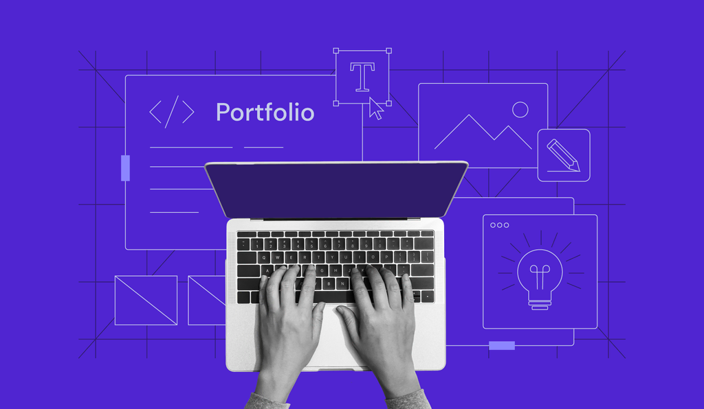

Internship Project: Personal Blog Homepage
August 12, 2025
As part of my internship practice, I designed and developed this personal blog homepage using HTML, CSS, and JavaScript. The layout is fully responsive, optimized for both desktop and mobile, and includes local images for offline viewing. This project demonstrates my ability to build clean, functional interfaces from scratch....
Read More →

Front-End Development Practice
August 10, 2025
Over the past weeks, I’ve been enhancing my front-end skills through a series of internship tasks, including building navigation menus, responsive layouts, and interactive components. These exercises have strengthened my expertise in HTML, CSS, and JavaScript, preparing me for real-world project challenges....
Read More →

Building My Internship Portfolio
August 8, 2025
I’m compiling my internship projects into a portfolio that highlights my technical capabilities and learning progress. This includes web development tasks, UI design experiments, and machine learning projects. The goal is to present a polished collection of work that reflects my skills and growth....
Read More →